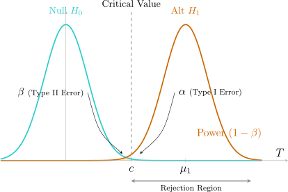

3.1 Introduction
In scientific work we often have to decide whether a claim about a population is supported by data. Because measurements are subject to random error, any decision we make from a sample can be wrong. The theory of hypothesis testing does not remove that risk; it arranges for the errors to occur at a rate fixed in advance, and among the rules that do so it looks for the one most likely to detect a false claim.
Definition 3.1.1. A statistical hypothesis is a statement about the distribution of a random variable \(X\). When the distribution is \(f(x;\theta )\) with \(\theta \) in a parameter space \(\Omega \), a hypothesis has the form \(H\colon \theta \in \Omega _0\) for a subset \(\Omega _0\subset \Omega \).
- A hypothesis is simple if it specifies the distribution completely, that is, \(\Omega _0\) contains a single point.
- Otherwise it is composite.
Example 3.1.2. Let \(X\sim N(\mu ,\sigma ^2)\).
- \(H\colon \mu = 4,\ \sigma ^2 = 16\) is simple.
- \(H\colon \mu = 4,\ \sigma ^2>0\) is composite, since \(\sigma ^2\) is not fixed.
- \(H\colon \mu \le 4\) with \(\sigma ^2 = 16\) known is composite.
We test a null hypothesis \(H_0\colon \theta \in \Omega _0\) against an alternative \(H_1\colon \theta \in \Omega _1\), where \(\Omega _0\) and \(\Omega _1\) are disjoint subsets of \(\Omega \), usually with \(\Omega _1 = \Omega - \Omega _0\).
Definition 3.1.3. A test is a rule that decides, for each possible sample \(x = (x_1,\dots ,x_n)\), whether to reject \(H_0\). The set of samples for which \(H_0\) is rejected is the critical region (or rejection region) \(R\). Usually \(R\) is described through a test statistic \(T = t(X_1,\dots ,X_n)\), for example \[R = \{x : t(x)\ge c\} .\]
A test is carried out in four steps:
- 1.
- state the hypotheses \(H_0\colon \theta \in \Omega _0\) and \(H_1\colon \theta \in \Omega _1\);
- 2.
- choose the critical region \(R\), before seeing the data;
- 3.
- collect the sample \(x_1,\dots ,x_n\);
- 4.
- reject \(H_0\) if \(x\in R\), and otherwise do not reject it.
Errors and the power function
Definition 3.1.4. The power function of a test with critical region \(R\) is \[\pi (\theta ) = P_\theta (X\in R),\qquad \theta \in \Omega ,\] the probability of rejecting \(H_0\) when the true parameter value is \(\theta \).
Two kinds of error are possible, as table 3.1 shows.
- A Type I error is rejecting \(H_0\) when it is true. Its probability is \(\alpha (\theta ) = \pi (\theta )\) for \(\theta \in \Omega _0\).
- A Type II error is failing to reject \(H_0\) when it is false. Its probability is \(\beta (\theta ) = P_\theta (X\notin R) = 1 - \pi (\theta )\) for \(\theta \in \Omega _1\).
An ideal test has \(\pi (\theta )=0\) on \(\Omega _0\) and \(\pi (\theta )=1\) on \(\Omega _1\). With a finite sample this is impossible: shrinking \(R\) lowers the Type I error but raises the Type II error, as figure 3.1 shows.
| \(H_0\) true | \(H_0\) false | |
| Do not reject \(H_0\) | correct decision | Type II error (\(\beta \)) |
| Reject \(H_0\) | Type I error (\(\alpha \)) | correct decision (power \(1-\beta \)) |

The Neyman–Pearson approach
Neyman and Pearson proposed treating the two errors asymmetrically. The Type I error is regarded as the more serious, so its probability is held below a fixed small number \(\alpha \); among the tests that do this we then look for one with the greatest power on \(\Omega _1\).
Definition 3.1.5. A test has level of significance \(\alpha \) if \(\pi (\theta )\le \alpha \) for every \(\theta \in \Omega _0\). Its size is \[\sup _{\theta \in \Omega _0}\pi (\theta ) ,\] the largest probability of a Type I error. A test of size \(\alpha \) has level \(\alpha \); a test of level \(\alpha \) has size at most \(\alpha \).
Definition 3.1.6. For a test that rejects \(H_0\) when \(t(x)\ge c\), the \(p\)-value of an observed sample \(x\) is \[p(x) = \sup _{\theta \in \Omega _0} P_\theta (T\ge t(x)) ,\] the smallest size at which the observed data would lead to rejection. The test of size \(\alpha \) rejects \(H_0\) exactly when \(p(x)\le \alpha \).
Example 3.1.7. A coin is tossed \(10\) times and \(X\), the number of heads, is recorded. To test \(H_0\colon p = 0.5\) against \(H_1\colon p = 0.7\) we reject \(H_0\) if \(X\ge 8\). Find the size of the test and the probability of a Type II error.
Solution. Under \(H_0\), \(X\sim \text {BIN}(10,0.5)\), so the size is \[\pi (0.5) = P(X\ge 8) = \frac {\binom {10}{8} + \binom {10}{9} + \binom {10}{10}}{2^{10}} = \frac {45 + 10 + 1}{1024} = 0.0547 .\] Under \(H_1\), \(X\sim \text {BIN}(10,0.7)\) and the power is \[\pi (0.7) = 45(0.7)^8(0.3)^2 + 10(0.7)^9(0.3) + (0.7)^{10} = 0.2335 + 0.1211 + 0.0282 = 0.3828 .\] The Type II error probability is \(\beta = 1 - 0.3828 = 0.6172\). With only ten tosses, a coin with \(p = 0.7\) would go undetected more often than not.
Example 3.1.8. Let \(X_1,\dots ,X_{16}\) be a random sample from \(N(\mu ,16)\). To test \(H_0\colon \mu = 10\) against \(H_1\colon \mu >10\) we reject \(H_0\) if \(\bar x>11.645\).
- (a)
- Find the power function and the size.
- (b)
- Find the power at \(\mu = 12\) and \(\mu = 13\).
- (c)
- Find the \(p\)-value if \(\bar x = 12.1\).
Solution.
- (a)
- Here \(\bar X\sim N(\mu ,1)\) because \(\frac {\sigma }{\sqrt n} = \frac {4}{4} = 1\). So \[\pi (\mu ) = P_\mu (\bar X>11.645) = P(Z>11.645 - \mu ) = 1 - \Phi (11.645 - \mu ).\] The null space is the single point \(\mu = 10\), so the size is \(\pi (10) = 1 - \Phi (1.645) = 0.05\).
- (b)
- \(\pi (12) = 1 - \Phi (-0.355) = 0.639\) and \(\pi (13) = 1 - \Phi (-1.355) = 0.912\).
- (c)
- The observed statistic is \(\bar x = 12.1\), so \(p = P_{10}(\bar X\ge 12.1) = P(Z\ge 2.1) = 0.0179\). This is below \(0.05\), and indeed \(12.1>11.645\); \(H_0\) is rejected at the \(5\%\) level but not at the \(1\%\) level.
Questions on this section
Stuck on something here? Ask below and it stays attached to this topic.